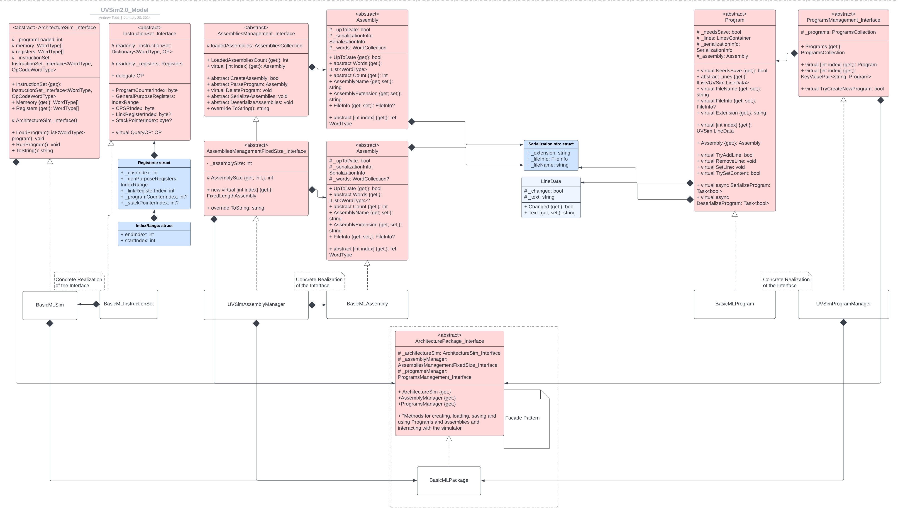

Programming Catalog
Welcome to my Programming catalog. Here you can find a collection of applications I have developed or otherwise helped to develop.
An entry will contain a carousel of screenshots showcasing various aspects of the application
from its user interface and or input output demonstrating its utility. Along with any images of the application there will be an information section to provide
details about the application.
Thanks for checking it out!
Catalog Index
Applications with GUI
UVSim - IDEUVSim - Basic Machine Language Interpreter, Assembler, and IDE

This application represents the culmination of a project I made for a Software Engineering class. Essentially this application begins at
its core with a very simple assembler that converts a rudimentary assembly code that was designed to demonstrate machine code by the use
of instruction codes as assembly mnemonics. That's about the best way I can think to describe the "Basic Machine Language" assembly programs
used in this broader project. The assembler creates a RISK style intermediate byte-code that is then digested by a runtime interpreter.
After the fundamental assembler and interpreter were implemented I decided to create a GUI that would allow for the editing of the
"Basic Machine Language" programs. As well as this editor we were tasked to create some kind of GUI that would allow the monitoring of the interpreters
resources. In the end what I ended up making was an Integrated Development Environment that allows the creation of "Basic Machine Language" programs,
the ability to then assemble those programs into the intermediate binary, and finally execute those programs on the runtime interpreter and view the
systems simulated resources in a graphical interface, all from within one integrated environment. Hence the UVSim IDE.
Technical Details and Notes
The entire project was built using c# .net. In the end I would probably not build the entire project in c# if I were to do it over again. The decision to
use c# was made out of a desire to use .net MAUI for the eventual GUI. In hindsight the use of MAUI was also not the best idea.
This was all done shortly after .net MAUI was officially released, and suffice it to say its support for desktop GUI development seemed to be a bit of an
afterthought at the time. Not only were the MAUI visual elements more oriented for mobile UIs, at the time that I built this project MAUI could not be used
to build to an exe. I did not know this when I began, and only became aware at the very end of development. I don't know if with .net 8s release and the
associated update to MAUI whether or not this is still the case. Live and learn I suppose.
All said and done, UVSim IDE is definitely not perfect, but it was a great learning experience. In particular it was a unique opportunity to get
a head start on thinking about certain aspects of assembler design and implementation that I would use soon thereafter when beginning the CS capstone.
These realizations when elaborated on and incorporated into my assembler, virtual machine, and compiler made the development of those pieces of software
much easier, more rapid, and resulted in a much better final product. Furthermore, it has allowed the code base to be much more receptive to changes and
even major feature additions.
For those curious about some of the design elements, here is a class diagram I made for the UVSim model. Sorry, I know the UML isn't the best

The most important aspect of the UVSim design, the one that ultimately was carried over into and expanded upon in the capstone, is the idea of a hybrid command and visitor pattern in the assembler and virtual machine's instruction handling. The idea is to create independent instruction objects for the respective software that become a piece of a larger machine that digests the input and uses those smaller pieces to get the job done.